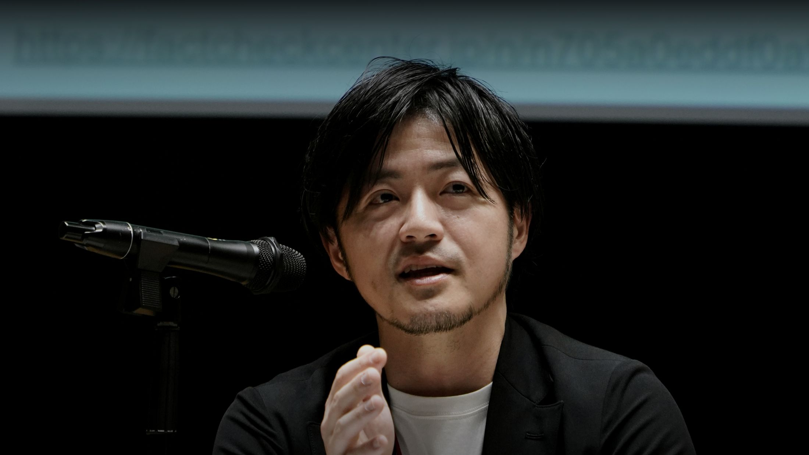

分断の時代にこそ
共有されるべき事実を
伝統メディアからネット、そして、AIの時代に。情報環境の変遷を追いかけています。
ABOUT
プロフィール
1977年、福岡生まれ。早稲田大政経学部卒。
2002年、朝日新聞入社。社会部、国際報道部、アジア総局、シンガポール支局長などを経て、デジタル版編集を担当。
2015年、BuzzFeed Japan創刊編集長に就任。ニュースからエンターテイメントまで、ソーシャルメディアを活用して急成長。
2019年、独立。2020年から2年間、Google News Labティーチングフェローとして延べ2万人超の記者や学生らにデジタル報道セミナーを実施。
2022年、日本ファクトチェックセンター（JFC）設立とともに編集長に就任。ファクトチェックの実践とメディアリテラシーの普及に取り組む。
その他の主な役職として、デジタル・ジャーナリスト育成機構事務局長。早稲田大、慶應大で非常勤講師。
詳しいプロフィール →2002朝日新聞 入社
2015BuzzFeed Japan 創刊編集長
2019独立
2020Google News Lab Teaching Fellow
2022日本ファクトチェックセンター（JFC）編集長
TALKS / MEDIA
登壇・出演・寄稿など
ファクトチェックやメディアリテラシー。情報環境の変化などを中心に、デジタル報道、ダイバーシティなどについても発信しています
寄稿・インタビュー
新聞、テレビ、ネットメディアなど
講演・登壇
セミナーや学会、公的機関・自治体、業界団体や企業のイベントなど
コンサルタント・監修
メディアや企業の情報収集・発信、ファクトチェックやメディアリテラシーについて
YouTube・Podcast
日本ファクトチェックセンターのアカウントを中心に、国内外のチャンネルに出演
テレビ・ラジオ
TBS「サンデーモーニング」、NHK「フェイクバスターズ」ほか
BOOKS
著書
- 子どもを育てられるなんて思わなかった LGBTQと「伝統的な家族」のこれから（編著・山川出版社）
- フェイクと憎悪（共著・大月書店）
- ジャーナリズムは歴史の第一稿である。（共著・成文堂）
- YOUTH QUAKE（共著・よはく舎）
CONTACT
お問い合わせ
講演・寄稿・コメント取材などのご相談は、メールでご連絡ください。
info@media-collab.com